![]()
I’ve been working on converting a couple of my dissertation chapters into standalone articles, so I’ve been revisiting and improving my older R code. As part of my dissertation work, I ran a global survey of international NGOs to see how they adjust their programs and strategies when working under authoritarian legal restrictions in dictatorship. In the survey, I asked a bunch of questions with categorical responses (like “How would you characterize your organization’s relationship with your host-country government?”, with the possible responses “Positive,” “Negative”, and “Neither”).
Analyzing this kind of categorical data can be tricky. What I ended up doing (and what people typically do) is looking at the differences in proportions of responses (i.e. is there a substantial difference in the proportion reporting “Positive” or “Negative” in different subgroups?). But doing this requires a little bit of extra work because of how proportions work. We can’t just treat proportions like continuous values. Denominators matter and help determine the level of uncertainty in the proportions. We need to account for these disparate sample sizes underlying the proportions.
Additionally, it’s tempting to treat Likert scale responses1 (i.e. things like “strongly agree”, “agree”, “neutral”, etc.) as numbers (e.g. make “strongly agree” a 2, “agree” a 1, “neutral” a 0, and so on), and then find things like averages (e.g. “the average response is a 1.34”), but those summary statistics aren’t actually that accurate. What would a 1.34 mean? A little higher than agree? What does that even mean?
1 Pronounced “lick-ert”!
We need to treat these kinds of survey questions as the categories that they are, which requires a different set of analytical tools than just findings averages and running linear regressions. We instead need to use things like frequencies, proportions, contingency tables and crosstabs, and fancier regression like ordered logistic models.
I’m a fan of Bayesian statistical inference—I find it way more intuitive and straightforward than frequentist null hypothesis testing. I first “converted” to Bayesianism back when I first analyzed my dissertation data in 2017 and used the newly-invented {rstanarm} package to calculate the difference in proportions of my various survey responses in Bayesian ways, based on a blog post and package for Bayesian proportion tests by Rasmus Bååth. He used JAGS, though, and I prefer to use Stan, hence my use of {rstanarm} back then.
Since 2017, though, I’ve learned a lot more about Bayesianism. I’ve worked through both Richard McElreath’s Statistical Rethinking and the gloriously accessible Bayes Rules!, and I no longer use {rstanarm}. I instead use {brms} for everything (or raw Stan if I’m feeling extra fancy).
So, as a reference for myself while rewriting these chapters, and as a way to consolidate everything I’ve learned about Bayesian-flavored proportion tests, here’s a guide to thinking about differences in proportions in a principled Bayesian way. I explore two different questions (explained in detail below). For the first one I’ll be super pedagogical and long-winded, showing how to find differences in proportions with classical frequentist statistical tests, with different variations of Stan code, and with different variations of {brms} code. For the second one I’ll be less pedagogical and just show the code and results.
Who this post is for
Here’s what I assume you know:
Wrangling and exploring the data
Before getting started, let’s load all the packages we need and create some helpful functions and variables:
Code
library(tidyverse) # ggplot, dplyr, and friends
library(gt) # Fancy tables
library(glue) # Easier string interpolation
library(scales) # Nicer labeling functions
library(ggmosaic) # Mosaic plots with ggplot
library(ggpattern) # Pattern fills in ggplot
library(patchwork) # Combine plots nicely
library(parameters) # Extract model parameters as data frames
library(cmdstanr) # Run Stan code from R
library(brms) # Nice frontend for Stan
library(tidybayes) # Manipulate MCMC chains in a tidy way
library(likert) # Contains the pisaitems data
# Use the cmdstanr backend for brms because it's faster and more modern than the
# default rstan backend. You need to install the cmdstanr package first
# (https://mc-stan.org/cmdstanr/) and then run cmdstanr::install_cmdstan() to
# install cmdstan on your computer.
options(mc.cores = 4,
brms.backend = "cmdstanr")
# Set some global Stan options
CHAINS <- 4
ITER <- 2000
WARMUP <- 1000
BAYES_SEED <- 1234
# Custom ggplot theme to make pretty plots
# Get the font at https://fonts.google.com/specimen/Jost
theme_nice <- function() {
theme_minimal(base_family = "Jost") +
theme(panel.grid.minor = element_blank(),
plot.title = element_text(family = "Jost", face = "bold"),
axis.title = element_text(family = "Jost Medium"),
axis.title.x = element_text(hjust = 0),
axis.title.y = element_text(hjust = 1),
strip.text = element_text(family = "Jost", face = "bold",
size = rel(1), hjust = 0),
strip.background = element_rect(fill = NA, color = NA))
}
# Function for formatting axes as percentage points
label_pp <- label_number(accuracy = 1, scale = 100,
suffix = " pp.", style_negative = "minus")Throughout this guide, we’ll use data from the 2009 Programme of International Student Assessment (PISA) survey, which is available in the {likert} package. PISA is administered every three years to 15-year-old students in dozens of countries, and it tracks academic performance, outcomes, and student attitudes cross-nationally.
One of the questions on the PISA student questionnaire (Q25) asks respondents how often they read different types of materials:
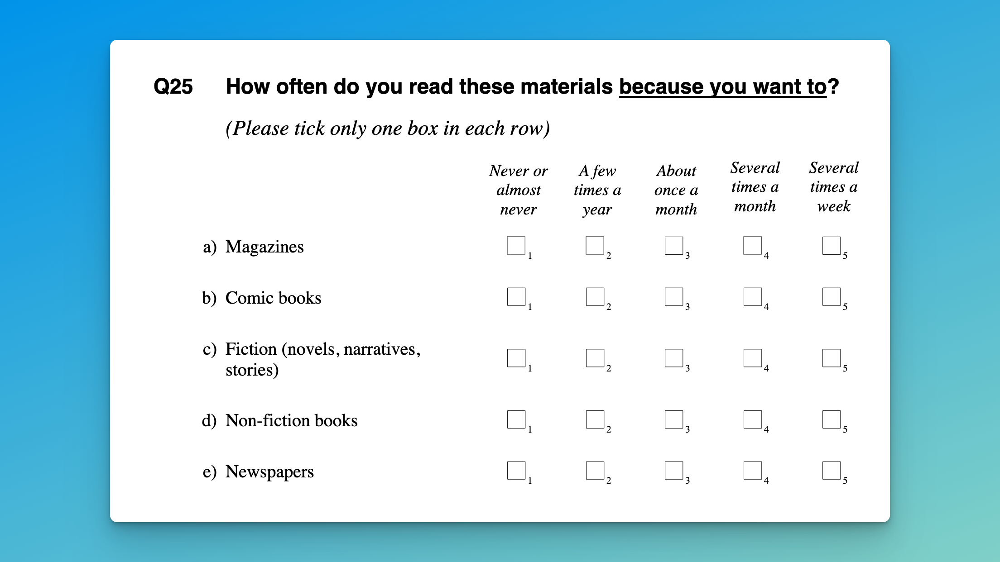
The excerpt of PISA data included in the {likert} package only includes responses from Canada, Mexico, and the United States, and for this question it seems to omit data from Canada, so we’ll compare the reading frequencies of American and Mexican students. Specifically we’ll look at how these students read comic books and newspapers. My wife is currently finishing her masters thesis on religious representation in graphic novels, and I’m a fan of comics in general, so it’ll be interesting to see how students in the two countries read these books. We’ll look at newspapers because it’s an interesting category with some helpful variation (reading trends for magazines, fiction, and nonfiction look basically the same in both countries so we’ll ignore them here.)
First we’ll load and clean the data. For the sake of illustration in this post, I collapse the five possible responses into just three:
- Rarely = Never or almost never
- Sometimes = A few times a year & About once a month
- Often = Several times a month & Several times a week
In real life it’s typically a bad idea to collapse categories like this, and I’m not an education researcher so this collapsing is probably bad and wrong, but whatever—just go with it :)
Code
# Load the data
data("pisaitems", package = "likert")
# Make a clean wide version of the data
reading_wide <- pisaitems %>%
# Add ID column
mutate(id = 1:n()) %>%
# Only keep a few columns
select(id, country = CNT, `Comic books` = ST25Q02, Newspapers = ST25Q05) %>%
# Collapse these categories
mutate(across(c(`Comic books`, Newspapers),
~fct_collapse(
.,
"Rarely" = c("Never or almost never"),
"Sometimes" = c("A few times a year", "About once a month"),
"Often" = c("Several times a month", "Several times a week")))) %>%
# Make sure the new categories are ordered correctly
mutate(across(c(`Comic books`, Newspapers),
~fct_relevel(., c("Rarely", "Sometimes", "Often")))) %>%
# Only keep the US and Mexico and get rid of the empty Canada level
filter(country %in% c("United States", "Mexico")) %>%
mutate(country = fct_drop(country))
head(reading_wide)
## id country Comic books Newspapers
## 1 23208 Mexico Sometimes Often
## 2 23209 Mexico Rarely Often
## 3 23210 Mexico Often Often
## 4 23211 Mexico Sometimes Sometimes
## 5 23212 Mexico Rarely Often
## 6 23213 Mexico Sometimes Sometimes
# Make a tidy (long) version
reading <- reading_wide %>%
pivot_longer(-c(id, country),
names_to = "book_type",
values_to = "frequency") %>%
drop_na(frequency)
head(reading)
## # A tibble: 6 × 4
## id country book_type frequency
## <int> <fct> <chr> <fct>
## 1 23208 Mexico Comic books Sometimes
## 2 23208 Mexico Newspapers Often
## 3 23209 Mexico Comic books Rarely
## 4 23209 Mexico Newspapers Often
## 5 23210 Mexico Comic books Often
## 6 23210 Mexico Newspapers OftenSince we created a tidy (long) version of the data, we can use {dplyr} to create some overall group summaries of reading frequency by type of material across countries. Having data in this format, with a column for the specific total (i.e. Mexico + Comic books + Rarely, and so on, or n here) and the overall country total (or total here), allows us to calculate group proportions (n / total):
Code
reading_counts <- reading %>%
group_by(country, book_type, frequency) %>%
summarize(n = n()) %>%
group_by(country, book_type) %>%
mutate(total = sum(n),
prop = n / sum(n)) %>%
ungroup()
reading_counts
## # A tibble: 12 × 6
## country book_type frequency n total prop
## <fct> <chr> <fct> <int> <int> <dbl>
## 1 Mexico Comic books Rarely 9897 37641 0.263
## 2 Mexico Comic books Sometimes 17139 37641 0.455
## 3 Mexico Comic books Often 10605 37641 0.282
## 4 Mexico Newspapers Rarely 6812 37794 0.180
## 5 Mexico Newspapers Sometimes 12369 37794 0.327
## 6 Mexico Newspapers Often 18613 37794 0.492
## 7 United States Comic books Rarely 3237 5142 0.630
## 8 United States Comic books Sometimes 1381 5142 0.269
## 9 United States Comic books Often 524 5142 0.102
## 10 United States Newspapers Rarely 1307 5172 0.253
## 11 United States Newspapers Sometimes 1925 5172 0.372
## 12 United States Newspapers Often 1940 5172 0.375And we can do a little pivoting and formatting and make this nice little contingency table / crosstab summarizing the data across the two countries:
Code
fancy_table <- reading_counts %>%
mutate(nice = glue("{prop}<br><span style='font-size:70%'>({n})</span>",
prop = label_percent()(prop),
n = label_comma()(n))) %>%
select(-n, -prop, -total) %>%
pivot_wider(names_from = "frequency",
values_from = "nice") %>%
group_by(country) %>%
gt() %>%
cols_label(
book_type = "",
) %>%
fmt_markdown(
columns = everything()
) %>%
opt_horizontal_padding(3) %>%
opt_table_font(font = "Fira Sans") %>%
tab_options(column_labels.font.weight = "bold",
row_group.font.weight = "bold")
fancy_table| Rarely | Sometimes | Often | |
|---|---|---|---|
| Mexico | |||
Comic books |
26.29% |
45.53% |
28.17% |
Newspapers |
18.02% |
32.73% |
49.25% |
| United States | |||
Comic books |
62.95% |
26.86% |
10.19% |
Newspapers |
25.27% |
37.22% |
37.51% |
This table has a lot of numbers and it’s hard to immediately see what’s going on, so we’ll visualize it really quick to get a sense for some of the initial trends. Visualizing this is a little tricky though. It’s easy enough to make a bar chart of the percentages, but doing that is a little misleading. Notice the huge differences in the numbers of respondents here—there are thousands of Mexican students and only hundreds of American students. We should probably visualize the data in a way that accounts for these different denominators, and percentages by themselves don’t do that.
We can use a mosaic plot (also known as a Marimekko chart) to visualize both the distribution of proportions of responses (Rarely, Sometimes, Often) and the proportions of respondents from each country (Mexico and the United States). We can use the {ggmosaic} package to create ggplot-flavored mosaic plots:
Mosaic plots are actually also built into base R!
Try running plot(table(mtcars$cyl, mtcars$am)).
Code
ggplot(reading) +
geom_mosaic(aes(x = product(frequency, country), # Look at combination of frequency by country
fill = frequency, alpha = country),
divider = mosaic("v"), # Make the plot divide vertically
offset = 0, color = "white", linewidth = 1) + # Add thin white border around boxes
scale_x_productlist(expand = c(0, 0.02)) + # Make the x-axis take up almost the full panel width, with 2% spacing on each side
scale_y_productlist(expand = c(0, 0)) + # Make the y-axis take up the full panel width
scale_fill_manual(values = c("#E51B24", "#FFDE00", "#009DDC"), guide = "none") +
scale_alpha_manual(values = c(0.6, 1), guide = "none") +
facet_wrap(vars(book_type)) +
theme_nice() +
theme(panel.grid.major.x = element_blank(),
panel.grid.major.y = element_blank(),
# Using labs(x = NULL) with scale_x_productlist() apparently doesn't
# work, so we can turn off the axis title with theme() instead
axis.title.x = element_blank(),
axis.title.y = element_blank())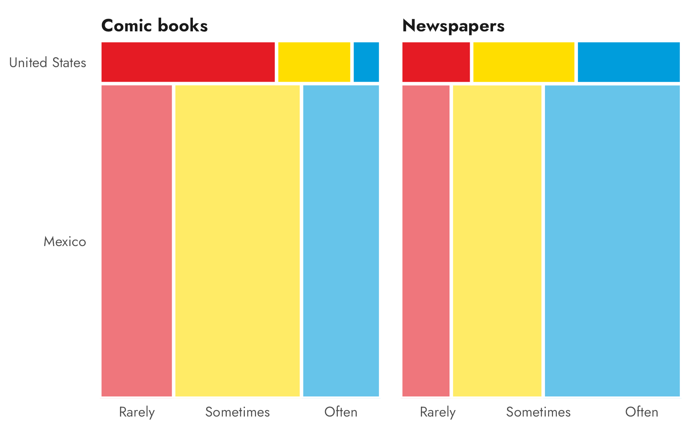
There are a few quick things to point out here in this plot. The Mexico rectangles are super tall, since there are so many more respondents from Mexico than from the United States. It looks like the majority of American students only rarely read comic books, while their Mexican counterparts do it either sometimes or often. Mexican students also read newspapers a lot more than Americans do, with “Often” the clear most common category. For Americans, the “Sometimes” and “Often” newspaper responses look about the same.
The questions
Throughout this post, I’ll illustrate the logic of Bayesian proportion tests by answering two questions that I had while looking at the contingency table and mosaic plot above:
- Do students in Mexico read comic books more often than students in the United States? (the ■two yellow cells in the “Often” column)
- Do students in the United States vary in their frequency of reading newspapers? (the ■blue row for newspapers in the United States)
Code
fancy_table %>%
tab_style(
style = list(
cell_fill(color = colorspace::lighten("#CD8A39", 0.7)),
cell_text(color = "#CD8A39", weight = "bold")
),
locations = list(
cells_body(columns = "Often", rows = c(1, 3))
)
) %>%
tab_style(
style = list(
cell_fill(color = colorspace::lighten("#009DDC", 0.8)),
cell_text(color = "#009DDC", weight = "bold")
),
locations = list(
cells_body(columns = 3:5, rows = 4)
)
)| Rarely | Sometimes | Often | |
|---|---|---|---|
| Mexico | |||
Comic books |
26.29% |
45.53% |
28.17% |
Newspapers |
18.02% |
32.73% |
49.25% |
| United States | |||
Comic books |
62.95% |
26.86% |
10.19% |
Newspapers |
25.27% |
37.22% |
37.51% |
Question 1: Comic book readership in the US vs. Mexico
Estimand
For our first question, we want to know if there’s a substantial difference in the proportion of students who read comic books often in the United States and Mexico, or whether the difference between the ■two yellow cells is greater than zero:
Code
fancy_table %>%
tab_style(
style = list(
cell_fill(color = colorspace::lighten("#CD8A39", 0.7)),
cell_text(color = "#CD8A39", weight = "bold")
),
locations = list(
cells_body(columns = "Often", rows = c(1, 3))
)
)| Rarely | Sometimes | Often | |
|---|---|---|---|
| Mexico | |||
Comic books |
26.29% |
45.53% |
28.17% |
Newspapers |
18.02% |
32.73% |
49.25% |
| United States | |||
Comic books |
62.95% |
26.86% |
10.19% |
Newspapers |
25.27% |
37.22% |
37.51% |
To be more formal about this, we’ll call this estimand \(\theta\), which is the difference between the two proportions \(\pi\):
\[ \theta = \pi_\text{Mexico, comic books, often} - \pi_\text{United States, comic books, often} \]
When visualizing this, we’ll use colors to help communicate the idea of between-group differences. We’ll get fancier with the colors in question 2, where we’ll look at three sets of pairwise differences, but here we’re just looking at a single pairwise difference (the difference between the US and Mexico), so we’ll use a bit of subtle and not-quite-correct color theory. In kindergarten we all learned the RYB color model, where primary pigments can be mixed to create secondary pigments. For instance
■blue + ■yellow = ■green.
If we do some (wrong color-theory-wise) algebra, we can rearrange the formula so that
■blue − ■green = ■yellow
If we make the United States ■blue and Mexico ■green, the ostensible color for their difference is ■yellow. This is TOTALLY WRONG and a lot more complicated according to actual color theory, but it’s a cute and subtle visual cue, so we’ll use it.
These primary colors are a little too bright for my taste though, so let’s artsty them up a bit. We’re looking at data about the US and Mexico, so we’ll use the Saguaro palette from the {NatParksPalettes} package, since Saguaro National Park is near the US-Mexico border and it has a nice blue, yellow, and green.
We’ll use ■yellow for the difference (θ) between the ■United States and ■Mexico.
Code
# US/Mexico question colors
clrs_saguaro <- NatParksPalettes::natparks.pals("Saguaro")
clr_usa <- clrs_saguaro[1]
clr_mex <- clrs_saguaro[6]
clr_diff <- clrs_saguaro[4]Classically
In classical frequentist statistics, there are lots of ways to test for the significance of a difference in proportions of counts, rates, proportions, and other categorical-related things, like chi-squared tests, Fisher’s exact test, or proportion tests. Each of these tests have special corresponding “flavors” that apply to specific conditions within the data being tested or the estimand being calculated (corrections for sample sizes, etc.). In standard stats classes, you memorize big flowcharts of possible statistical operations and select the correct one for the situation.
Since we want to test the difference between two group proportions, we’ll use R’s prop.test(), which tests the null hypothesis that the proportions in some number of groups are the same:
\[ H_0: \theta = 0 \]
Our job with null hypothesis significance testing is to calculate a test statistic (\(\chi^2\) in this case) for \(\theta\), determine the probability of seeing that statistic in a world where \(\theta\) is actually 0, and infer whether the value we see could plausibly fit in a world where the null hypothesis is true.
We need to feed prop.test() either a matrix with a column of counts of successes (students who read comic books often) and failures (students who do not read comic books often) or two separate vectors: one of counts of successes (students who read comic books often) and one of counts of totals (all students). We’ll do it both ways for fun.
First we’ll make a matrix of the counts of students from Mexico and the United States, with columns for the counts of those who read often and of those who don’t read often.
Code
often_matrix <- reading_counts %>%
filter(book_type == "Comic books", frequency == "Often") %>%
mutate(n_not_often = total - n) %>%
select(n_often = n, n_not_often) %>%
as.matrix()
often_matrix
## n_often n_not_often
## [1,] 10605 27036
## [2,] 524 4618Now we can feed that to prop.test():
Code
prop.test(often_matrix)
##
## 2-sample test for equality of proportions with continuity correction
##
## data: often_matrix
## X-squared = 759, df = 1, p-value <2e-16
## alternative hypothesis: two.sided
## 95 percent confidence interval:
## 0.170 0.189
## sample estimates:
## prop 1 prop 2
## 0.282 0.102This gives us some helpful information. The “flavor” of the formal test is a “2-sample test for equality of proportions with continuity correction”, which is fine, I guess.
We have proportions that are the same as what we have in the highlighted cells in the contingency table (28.17% / 10.19%) and we have 95% confidence interval for the difference. Oddly, R doesn’t show the actual difference in these results, but we can see that difference if we use model_parameters() from the {parameters} package (which is the apparent successor to broom::tidy()?). Here we can see that the difference in proportions is 18 percentage points:
Code
prop.test(often_matrix) %>%
model_parameters()
## 2-sample test for equality of proportions
##
## Proportion | Difference | 95% CI | Chi2(1) | p
## --------------------------------------------------------------
## 28.17% / 10.19% | 17.98% | [0.17, 0.19] | 759.26 | < .001
##
## Alternative hypothesis: two.sidedAnd finally we have a test statistic: a \(\chi^2\) value of 759.265, which is huge and definitely statistically significant. In a hypothetical world where there’s no difference in the proportions, the probability of seeing a difference of at least 18 percentage points is super tiny (p < 0.001). We have enough evidence to confidently reject the null hypothesis and declare that the proportions of the groups are not the same. With the confidence interval, we can say that we are 95% confident that the interval 0.17–0.189 captures the true population parameter. We can’t say that there’s a 95% chance that the true value falls in this range—we can only talk about the range.
We can also do this without using a matrix by feeding prop.test() two vectors: one with counts of people who read comics often and one with counts of total respondents:
Code
often_values <- reading_counts %>%
filter(book_type == "Comic books", frequency == "Often")
(n_often <- as.numeric(c(often_values[1, 4], often_values[2, 4])))
## [1] 10605 524
(n_respondents <- as.numeric(c(often_values[1, 5], often_values[2, 5])))
## [1] 37641 5142
prop.test(n_often, n_respondents)
##
## 2-sample test for equality of proportions with continuity correction
##
## data: n_often out of n_respondents
## X-squared = 759, df = 1, p-value <2e-16
## alternative hypothesis: two.sided
## 95 percent confidence interval:
## 0.170 0.189
## sample estimates:
## prop 1 prop 2
## 0.282 0.102The results are the same.
Bayesianly with Stan
Why Bayesian modeling?
I don’t like null hypotheses and I don’t like flowcharts.
Regular classical statistics classes teach about null hypotheses and flowcharts, but there’s a better way. In his magisterial Statistical Rethinking, Richard McElreath describes how in legends people created mythological clay robots called golems that could protect cities from attacks, but that could also spin out of control and wreak all sorts of havoc. McElreaths uses the idea of golems as a metaphor for classical statistical models focused on null hypothesis significance testing, which also consist of powerful quasi-alchemical procedures that have to be followed precisely with specific flowcharts:
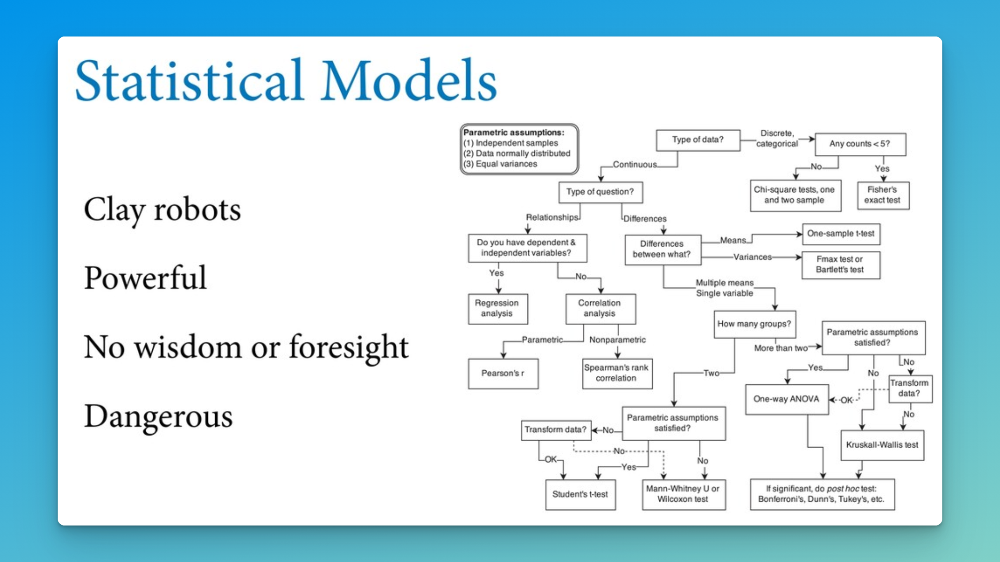
McElreath argues that this golem-based approach to statistics is incredibly limiting, since (1) you have to choose the right test, and if it doesn’t exist, you have to wait for some fancy statistician to invent it, and (2) you have to focus on rejecting null hypotheses instead of exploring research hypotheses.
For instance, in the null hypothesis framework section above, this was the actual question undergirding the analysis:
In a hypothetical world where \(\theta = 0\) (or where there’s no difference between the proportions) what’s the probability that this one-time collection of data fits in that world—and if the probability is low, is there enough evidence to confidently reject that hypothetical world of no difference?
oof. We set our prop.test() golem to work and got a p-value for the probability of seeing the 18 percentage point difference in a world where there’s actually no difference. That p-value was low, so we confidently declared \(\theta\) to be statistically significant and not zero. But that was it. We rejected the null world. Yay. But that doesn’t say much about our main research hypothesis. Boo.
Our actual main question is far simpler:
Given the data here, what’s the probability that there’s no difference between the proportions, or that \(\theta \neq 0\)?
Bayesian-flavored statistics lets us answer this question and avoid null hypotheses and convoluted inference. Instead of calculating the probability of seeing some data given a null hypothesis (\(P(\text{Data} \mid H_0)\)), we can use Bayesian inference to calculate the probability of a hypothesis given some data (\(P(\theta \neq 0 \mid \text{Data})\)).
Formal model
So instead of thinking about a specific statistical golem, we can think about modeling the data-generating process that could create the counts and proportions that we see in the PISA data.
Remember that our data looks like this, with n showing a count of the people who read comic books often in each country and total showing a count of the people who responded to the question.
Code
reading_counts %>%
filter(book_type == "Comic books", frequency == "Often")
## # A tibble: 2 × 6
## country book_type frequency n total prop
## <fct> <chr> <fct> <int> <int> <dbl>
## 1 Mexico Comic books Often 10605 37641 0.282
## 2 United States Comic books Often 524 5142 0.102The actual process for generating that n involved asking thousands of individual, independent people if they read comic books often. If someone says yes, it’s counted as a “success” (or marked as “often”); if they say no, it’s not marked as “often”. It’s a binary choice repeated across thousands of independent questions, or “trials.” There’s also an underlying overall probability for reporting “often,” which corresponds to the proportion of people selecting it.
The official statistical term for this kind of data-generating processes (a bunch of independent trials with some probability of success) is a binomial distribution, and it’s defined like this, with three parameters:
\[ y \sim \operatorname{Binomial}(n, \pi) \]
- Number of successes (\(y\): the number of people responding yes to “often,” or
nin our data - Probability of success (\(\pi\)): the probability someone says yes to “often,” or the thing we want to model for each country
- Number of trials (\(n\)): the total number of people asked the question, or
totalin our data
The number of successes and trials are just integers—they’re counts—and we already know those, since they’re in the data. The probability of success \(\pi\) is a percentage and ranges somewhere between 0 and 1. We don’t know this value, but we can estimate it with Bayesian methods by defining a prior and a likelihood, churning through a bunch of Monte Carlo Markov Chain (MCMC) simulations, and finding a posterior distribution of \(\pi\).
We can use a Beta distribution to model \(\pi\), since Beta distributions are naturally bound between 0 and 1 and they work well for probability-scale things. Beta distributions are defined by two parameters: (1) \(\alpha\) or \(a\) or shape1 in R and (2) \(\beta\) or \(b\) or shape2 in R. See this section of my blog post on zero-inflated Beta regression for way more details about how these parameters work and what they mean.
Super quickly, we’re interested in the probability of a “success” (or where “often” is yes), which is the number of “often”s divided by the total number of responses:
\[ \frac{\text{Number of successes}}{\text{Number of trials}} \]
or
\[ \frac{\text{Number of often = yes}}{\text{Number of responses}} \]
We can separate that denominator into two parts:
\[ \frac{\text{Number of often = yes}}{(\text{Number of often = yes}) + (\text{Number of often } \neq \text{yes})} \]
The \(\alpha\) and \(\beta\) parameters correspond to the counts of successes and failures::
\[ \frac{\alpha}{\alpha + \beta} \]
With these two shape parameters, we can create any percentage or fraction we want. We can also control the uncertainty of the distribution by tinkering with the scale of the parameters. For instance, if we think there’s a 40% chance of something happening, this could be represented with \(\alpha = 4\) and \(\beta = 6\), since \(\frac{4}{4 + 6} = 0.4\). We could also write it as \(\alpha = 40\) and \(\beta = 60\), since \(\frac{40}{40 + 60} = 0.4\) too. Both are centered at 40%, but Beta(40, 60) is a lot narrower and less uncertain.
Code
ggplot() +
stat_function(fun = ~dbeta(., 4, 6), geom = "area",
aes(fill = "Beta(4, 6)"), alpha = 0.5) +
stat_function(fun = ~dbeta(., 40, 60), geom = "area",
aes(fill = "Beta(40, 60)"), alpha = 0.5) +
scale_x_continuous(labels = label_percent()) +
scale_fill_manual(values = c("Beta(4, 6)" = "#FFDC00",
"Beta(40, 60)" = "#F012BE")) +
labs(x = "π", y = NULL, fill = NULL) +
theme_nice() +
theme(axis.text.y = element_blank(),
legend.position = "top")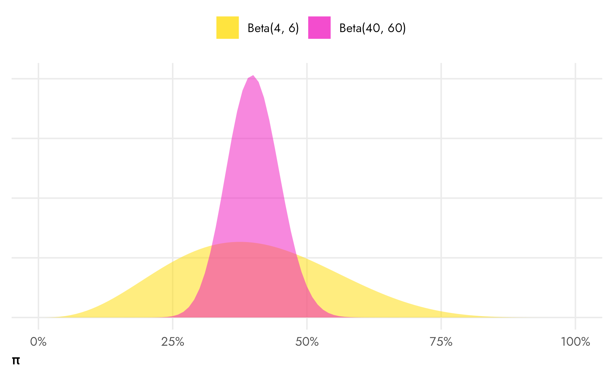
We’ve already seen the data and know that the proportion of students who read comic books often is 10ish% in the United States and 30ish% in Mexico, but we’ll cheat and say that we think that around 25% of students read comic books often, ± some big amount. This implies something like a Beta(2, 6) distribution (since \(\frac{2}{2+6} = 0.25\)), with lots of low possible values, but not a lot of \(\pi\)s are above 50%. We could narrow this down by scaling up the parameters (like Beta(20, 60) or Beta(10, 40), etc.), but leaving the prior distribution of \(\pi\) wide like this allows for more possible responses (maybe 75% of students in one country read comic books often!).
Code
ggplot() +
stat_function(fun = ~dbeta(., 2, 6), geom = "area", fill = "#AC3414") +
scale_x_continuous(labels = label_percent()) +
labs(x = "Possible values for π", y = NULL, fill = NULL) +
theme_nice() +
theme(axis.text.y = element_blank())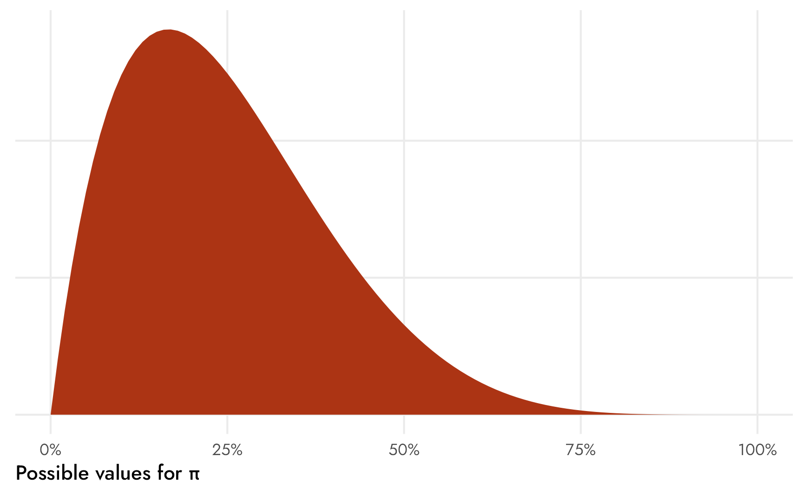
Okay, so with our Beta(2, 6) prior, we now have all the information we need to specify the official formal model of the data generating process for our estimand \(\theta\) without any flowchart golems or null hypotheses:
\[ \begin{aligned} &\ \textbf{Estimand} \\ \theta =&\ \pi_{\text{comic books, often}_\text{Mexico}} - \pi_{\text{comic books, often}_\text{US}} \\[10pt] &\ \textbf{Beta-binomial model for Mexico} \\ y_{n \text{ comic books, often}_\text{Mexico}} \sim&\ \operatorname{Binomial}(n_{\text{Total students}_\text{Mexico}}, \pi_{\text{comic books, often}_\text{Mexico}}) \\ \pi_{\text{comic books, often}_\text{Mexico}} \sim&\ \operatorname{Beta}(\alpha_\text{Mexico}, \beta_\text{Mexico}) \\[10pt] &\ \textbf{Beta-binomial model for the United States} \\ y_{n \text{ comic books, often}_\text{US}} \sim&\ \operatorname{Binomial}(n_{\text{Total students}_\text{US}}, \pi_{\text{comic books, often}_\text{US}}) \\ \pi_{\text{comic books, often}_\text{US}} \sim&\ \operatorname{Beta}(\alpha_\text{US}, \beta_\text{US}) \\[10pt] &\ \textbf{Priors} \\ \alpha_\text{Mexico}, \alpha_\text{US} =&\ 2 \\ \beta_\text{Mexico}, \beta_\text{US} =&\ 6 \end{aligned} \]
Basic Stan model
The neat thing about Stan is that it translates fairly directly from this mathematical model notation into code. Here we’ll define three different blocks in a Stan program:
- Data that gets fed into the model, or the counts of respondents (or \(y\) and \(n\))
- Parameters to estimate, or \(\pi_\text{US}\) and \(\pi_\text{Mexico}\)
- The prior and model for estimating those parameters, or \(\operatorname{Beta}(2, 6)\) and \(y \sim \operatorname{Binomial}(n, \pi)\)
props-basic.stan
// Stuff from R
data {
int<lower=0> often_us;
int<lower=0> total_us;
int<lower=0> often_mexico;
int<lower=0> total_mexico;
}
// Things to estimate
parameters {
real<lower=0, upper=1> pi_us;
real<lower=0, upper=1> pi_mexico;
}
// Prior and likelihood
model {
pi_us ~ beta(2, 6);
pi_mexico ~ beta(2, 6);
often_us ~ binomial(total_us, pi_us);
often_mexico ~ binomial(total_mexico, pi_mexico);
}Using {cmdstanr} as our interface with Stan, we first have to compile the script into an executable file:
Code
model_props_basic <- cmdstan_model("props-basic.stan")We can then feed it a list of data and run a bunch of MCMC chains:
Code
often_values <- reading_counts %>%
filter(book_type == "Comic books", frequency == "Often")
(n_often <- as.numeric(c(often_values[1, 4], often_values[2, 4])))
## [1] 10605 524
(n_respondents <- as.numeric(c(often_values[1, 5], often_values[2, 5])))
## [1] 37641 5142
props_basic_samples <- model_props_basic$sample(
data = list(often_us = n_often[2],
total_us = n_respondents[2],
often_mexico = n_often[1],
total_mexico = n_respondents[1]),
chains = CHAINS, iter_warmup = WARMUP, iter_sampling = (ITER - WARMUP), seed = BAYES_SEED,
refresh = 0
)
## Running MCMC with 4 parallel chains...
##
## Chain 1 finished in 0.0 seconds.
## Chain 2 finished in 0.0 seconds.
## Chain 3 finished in 0.0 seconds.
## Chain 4 finished in 0.0 seconds.
##
## All 4 chains finished successfully.
## Mean chain execution time: 0.0 seconds.
## Total execution time: 0.2 seconds.
props_basic_samples$print(
variables = c("pi_us", "pi_mexico"),
"mean", "median", "sd", ~quantile(.x, probs = c(0.025, 0.975))
)
## variable mean median sd 2.5% 97.5%
## pi_us 0.10 0.10 0.00 0.09 0.11
## pi_mexico 0.28 0.28 0.00 0.28 0.29We have the two proportions—10% and 28%—and they match what we found in the original table and in the frequentist prop.test() results (yay!). Let’s visualize these things:
Code
props_basic_samples %>%
gather_draws(pi_us, pi_mexico) %>%
ggplot(aes(x = .value, y = .variable, fill = .variable)) +
stat_halfeye() +
# Multiply axis limits by 1.5% so that the right "%" isn't cut off
scale_x_continuous(labels = label_percent(), expand = c(0, 0.015)) +
scale_fill_manual(values = c(clr_usa, clr_mex)) +
guides(fill = "none") +
labs(x = "Proportion of students who read comic books often",
y = NULL) +
theme_nice()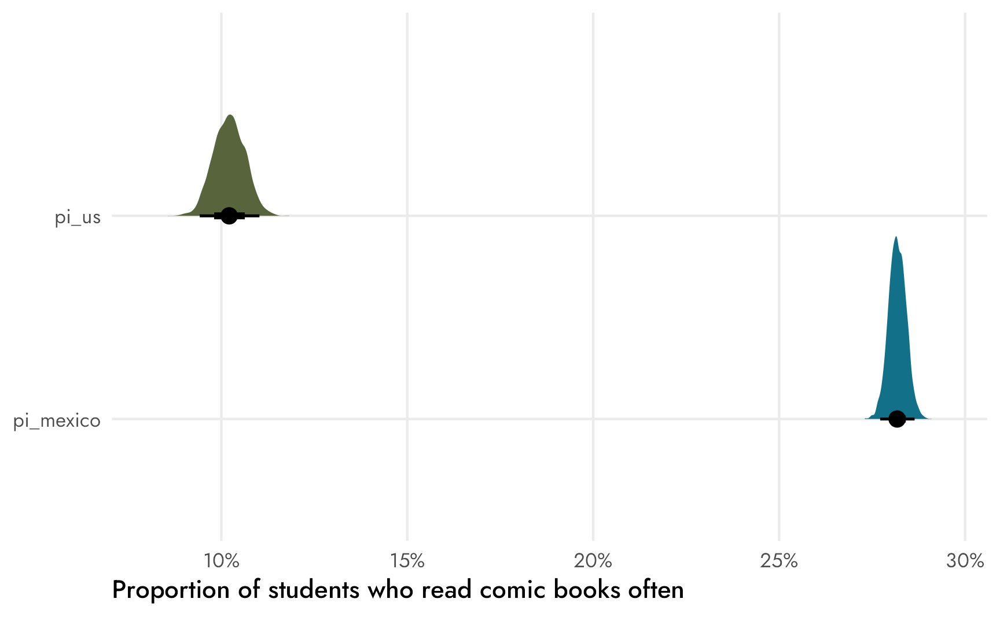
This plot is neat for a couple reasons. First it shows the difference in variance across these two distributions. The sample size for Mexican respondents is huge, so the average is a lot more precise and ■the distribution is narrower than ■the American one. Second, by just eyeballing the plot we can see that there’s definitely no overlap between the two distributions, which implies that ■the difference (θ) between the two is definitely not zero—Mexican respondents are way more likely than Americans to read comic books often. We can find ■that difference by taking the pairwise difference between the two with compare_levels() from {tidybayes}, which subtracts one group’s posterior from the other:
Code
basic_diffs <- props_basic_samples %>%
gather_draws(pi_us, pi_mexico) %>%
ungroup() %>%
# compare_levels() subtracts things using alphabetical order, so by default it
# would calculate pi_us - pi_mexico, but we want the opposite, so we have to
# make pi_us the first level
mutate(.variable = fct_relevel(.variable, "pi_us")) %>%
compare_levels(.value, by = .variable, comparison = "pairwise")
basic_diffs %>%
ggplot(aes(x = .value)) +
stat_halfeye(fill = clr_diff) +
# Multiply axis limits by 0.5% so that the right "pp." isn't cut off
scale_x_continuous(labels = label_pp, expand = c(0, 0.005)) +
labs(x = "Percentage point difference in proportions",
y = NULL) +
theme_nice() +
theme(axis.text.y = element_blank(),
panel.grid.major.y = element_blank())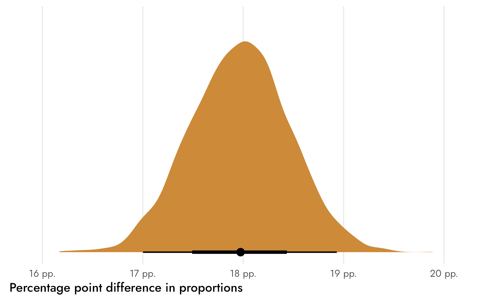
We can also do some Bayesian inference and find the probability that ■that difference between the two groups is greater than 0 (or a kind of Bayesian p-value, but way more logical than null hypothesis p-values). We can calculate how many posterior draws are bigger than 0 and divide that by the number of draws to get the official proportion.
Code
basic_diffs %>%
summarize(median = median_qi(.value),
p_gt_0 = sum(.value > 0) / n()) %>%
unnest(median)
## # A tibble: 1 × 8
## .variable y ymin ymax .width .point .interval p_gt_0
## <chr> <dbl> <dbl> <dbl> <dbl> <chr> <chr> <dbl>
## 1 pi_mexico - pi_us 0.180 0.170 0.189 0.95 median qi 1There’s a 100% chance that ■that difference is not zero, or a 100% chance that Mexican respondents are way more likely than their American counterparts to read comic books often.
Stan model improvements
This basic Stan model is neat, but we can do a couple things to make it better:
- Right now we have to feed it 4 separate numbers (counts and totals for the US and Mexico). It would be nice to just feed it a vector of counts and a vector of totals (or even a whole matrix like we did with
prop.test()). - Right now we have to manually calculate the difference between the two groups (0.28 − 0.10). It would be nice to have Stan do that work for us.
We’ll tackle each of these issues in turn.
First we’ll change how the script handles the data so that it’s more dynamic. Now instead of defining explicit variables and parameters as total_us or pi_mexico or whatever, we’ll use arrays and vectors so that we can use any arbitrary number of groups if we want:
props-better.stan
// Stuff from R
data {
int<lower=0> n;
array[n] int<lower=0> often;
array[n] int<lower=0> total;
}
// Things to estimate
parameters {
vector<lower=0, upper=1>[n] pi;
}
// Prior and likelihood
model {
pi ~ beta(2, 6);
// We could specify separate priors like this
// pi[1] ~ beta(2, 6);
// pi[2] ~ beta(2, 6);
often ~ binomial(total, pi);
}Let’s make sure it works. Note how we now have to feed it an n for the number of countries and vectors of counts for often and total:
Code
model_props_better <- cmdstan_model("props-better.stan")Code
props_better_samples <- model_props_better$sample(
data = list(n = 2,
often = c(n_often[2], n_often[1]),
total = c(n_respondents[2], n_respondents[1])),
chains = CHAINS, iter_warmup = WARMUP, iter_sampling = (ITER - WARMUP), seed = BAYES_SEED,
refresh = 0
)
## Running MCMC with 4 parallel chains...
##
## Chain 1 finished in 0.0 seconds.
## Chain 2 finished in 0.0 seconds.
## Chain 3 finished in 0.0 seconds.
## Chain 4 finished in 0.0 seconds.
##
## All 4 chains finished successfully.
## Mean chain execution time: 0.0 seconds.
## Total execution time: 0.1 seconds.
props_better_samples$print(
variables = c("pi[1]", "pi[2]"),
"mean", "median", "sd", ~quantile(.x, probs = c(0.025, 0.975))
)
## variable mean median sd 2.5% 97.5%
## pi[1] 0.10 0.10 0.00 0.09 0.11
## pi[2] 0.28 0.28 0.00 0.28 0.29It worked and the results are the same! The parameter names are now ■“pi[1]” and ■“pi[2]” and we’re responsible for keeping track of which subscripts correspond to which countries, which is annoying, but that’s Stan :shrug:.
Finally, we can modify the script a little more to automatically calculate ■θ. We’ll add a generated quantities block for that:
props-best.stan
// Stuff from R
data {
int<lower=0> n;
array[n] int<lower=0> often;
array[n] int<lower=0> total;
}
// Things to estimate
parameters {
vector<lower=0, upper=1>[n] pi;
}
// Prior and likelihood
model {
pi ~ beta(2, 6);
often ~ binomial(total, pi);
}
// Stuff Stan will calculate before sending back to R
generated quantities {
real theta;
theta = pi[2] - pi[1];
}Code
model_props_best <- cmdstan_model("props-best.stan")Code
props_best_samples <- model_props_best$sample(
data = list(n = 2,
often = c(n_often[2], n_often[1]),
total = c(n_respondents[2], n_respondents[1])),
chains = CHAINS, iter_warmup = WARMUP, iter_sampling = (ITER - WARMUP), seed = BAYES_SEED,
refresh = 0
)
## Running MCMC with 4 parallel chains...
##
## Chain 1 finished in 0.0 seconds.
## Chain 2 finished in 0.0 seconds.
## Chain 3 finished in 0.0 seconds.
## Chain 4 finished in 0.0 seconds.
##
## All 4 chains finished successfully.
## Mean chain execution time: 0.0 seconds.
## Total execution time: 0.1 seconds.
props_best_samples$print(
variables = c("pi[1]", "pi[2]", "theta"),
"mean", "median", "sd", ~quantile(.x, probs = c(0.025, 0.975))
)
## variable mean median sd 2.5% 97.5%
## pi[1] 0.10 0.10 0.00 0.09 0.11
## pi[2] 0.28 0.28 0.00 0.28 0.29
## theta 0.18 0.18 0.00 0.17 0.19Check that out! Stan returned our ■18 percentage point difference and we didn’t need to use compare_levels()! We can plot it directly:
Code
# Raw Stan doesn't preserve the original country names or order, so we have to
# do a bunch of reversing and relabeling on our own here
p1 <- props_best_samples %>%
spread_draws(pi[i]) %>%
mutate(i = factor(i)) %>%
ggplot(aes(x = pi, y = fct_rev(i), fill = fct_rev(i))) +
stat_halfeye() +
# Multiply axis limits by 1.5% so that the right "%" isn't cut off
scale_x_continuous(labels = label_percent(), expand = c(0, 0.015)) +
scale_y_discrete(labels = rev(c("United States", "Mexico"))) +
scale_fill_manual(values = c(clr_usa, clr_mex)) +
guides(fill = "none") +
labs(x = "Proportion of students who read comic books often",
y = NULL) +
theme_nice()
p2 <- props_best_samples %>%
spread_draws(theta) %>%
ggplot(aes(x = theta)) +
stat_halfeye(fill = clr_diff) +
# Multiply axis limits by 0.5% so that the right "pp." isn't cut off
scale_x_continuous(labels = label_pp, expand = c(0, 0.005)) +
labs(x = "Percentage point difference in proportions",
y = NULL) +
theme_nice() +
theme(axis.text.y = element_blank(),
panel.grid.major.y = element_blank())
(p1 / plot_spacer() / p2) +
plot_layout(heights = c(0.785, 0.03, 0.185))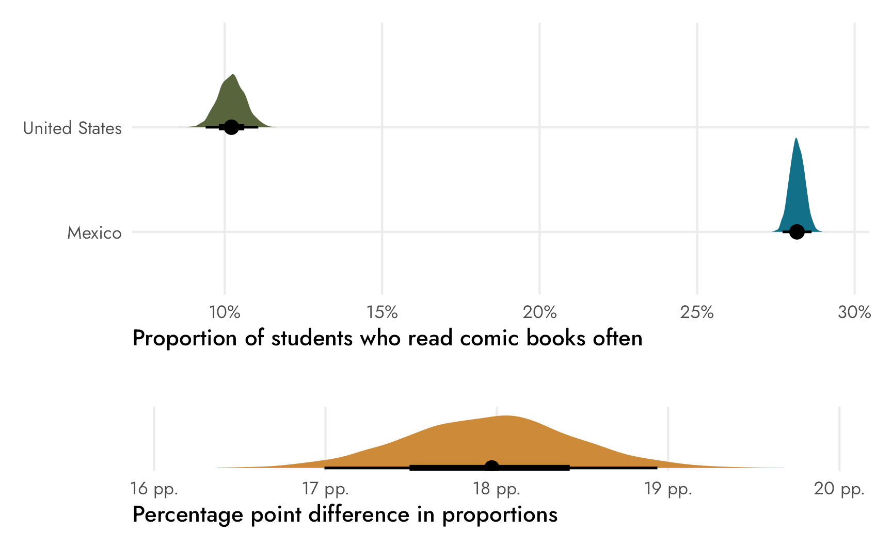
Bayesianly with {brms}
Working with raw Stan code like that is fun and exciting—understanding the inner workings of these models is really neat and important! But in practice, I rarely use raw Stan. It takes too much pre- and post-processing for my taste (the data has to be fed in a list instead of a nice rectangular data frame; the variable names get lost unless you do some extra programming work; etc.).
Instead, I use {brms} for pretty much all my Bayesian models. It uses R’s familiar formula syntax, it works with regular data frames, it maintains variable names, and it’s just an all-around super-nice-and-polished frontend for working with Stan.
With a little formula finagling, we can create the same beta binomial model we built with raw Stan using {brms}
Counts and trials as formula outcomes
In R’s standard formula syntax, you put the outcome on the left-hand side of a ~ and the explanatory variables on the right-hand side:
lm(y ~ x, data = whatever)You typically feed the model function a data frame with columns for each of the variables included. One neat and underappreciated feature of the glm() function is that you can feed function aggregated count data (instead of long data with lots of rows) by specifying the number of successes and the total number of failures as the outcome part of the formula. This runs something called aggregated logistic regression or aggregated binomial regression.
glm(cbind(n_successes, n_failures) ~ x, data = whatever, family = binomial){brms} uses slightly different syntax for aggregated logistic regression. Instead of the number of failures, it needs the total number of trials, and it doesn’t use cbind(...)—it uses n | trials(total), like this:
brm(
bf(n | trials(total) ~ x)
data = whatever,
family = binomial
)Our comic book data is already in this count form, and we have columns for the number of “successes” (number of respondents reading comic books often) and the total number of “trials” (number of respondents reading comic books):
Code
often_comics_only <- reading_counts %>%
filter(book_type == "Comic books", frequency == "Often")
often_comics_only
## # A tibble: 2 × 6
## country book_type frequency n total prop
## <fct> <chr> <fct> <int> <int> <dbl>
## 1 Mexico Comic books Often 10605 37641 0.282
## 2 United States Comic books Often 524 5142 0.102Binomial model with logistic link
Since we have columns for n, total, and country, we can run an aggregated binomial logistic regression model like this:
Code
often_comics_model_logit <- brm(
bf(n | trials(total) ~ country),
data = often_comics_only,
family = binomial(link = "logit"),
chains = CHAINS, warmup = WARMUP, iter = ITER, seed = BAYES_SEED,
refresh = 0
)
## Start sampling
## Running MCMC with 4 parallel chains...
##
## Chain 1 finished in 0.0 seconds.
## Chain 2 finished in 0.0 seconds.
## Chain 3 finished in 0.0 seconds.
## Chain 4 finished in 0.0 seconds.
##
## All 4 chains finished successfully.
## Mean chain execution time: 0.0 seconds.
## Total execution time: 0.1 seconds.Code
often_comics_model_logit
## Family: binomial
## Links: mu = logit
## Formula: n | trials(total) ~ country
## Data: often_comics_only (Number of observations: 2)
## Draws: 4 chains, each with iter = 2000; warmup = 1000; thin = 1;
## total post-warmup draws = 4000
##
## Population-Level Effects:
## Estimate Est.Error l-95% CI u-95% CI Rhat Bulk_ESS Tail_ESS
## Intercept -0.94 0.01 -0.96 -0.91 1.00 4706 3051
## countryUnitedStates -1.24 0.05 -1.34 -1.15 1.00 981 1123
##
## Draws were sampled using sample(hmc). For each parameter, Bulk_ESS
## and Tail_ESS are effective sample size measures, and Rhat is the potential
## scale reduction factor on split chains (at convergence, Rhat = 1).Because we used a logit link for the binomial family, these results are on the log odds scale, which, ew. We can’t really interpret them directly unless we do some extra math with plogis() (see here for more about how to do that). The logistic-ness of the results is also apparent in the formal mathy model for this approach, which no longer uses a Beta distribution for estimating \(\pi\):
\[ \begin{aligned} y_{n \text{ comic books, often}} \sim&\ \operatorname{Binomial}(n_{\text{Total students}}, \pi_{\text{comic books, often}}) \\ \operatorname{logit}(\pi_{\text{comic books, often}}) =&\ \beta_0 + \beta_1 \text{United States} \\[5pt] \beta_0, \beta_1 =& \text{Whatever brms uses as default priors}\\ \end{aligned} \]
We can still work with percentage point values if we use epred_draws() and a bit of data wrangling, since that automatically back-transforms \(\operatorname{logit}(\pi)\) from log odds to counts (see here for an explanation of how and why). We can convert these posterior counts to a proportion again by dividing each predicted count by the total for each row.
Code
# brms keeps all the original factor/category names, so there's no need for
# extra manual work here!
draws_logit <- often_comics_model_logit %>%
# This gives us counts...
epred_draws(newdata = often_comics_only) %>%
# ...so divide by the original total to get proportions again
mutate(.epred_prop = .epred / total)
p1 <- draws_logit %>%
ggplot(aes(x = .epred_prop, y = country, fill = country)) +
stat_halfeye() +
scale_x_continuous(labels = label_percent(), expand = c(0, 0.015)) +
scale_fill_manual(values = c(clr_usa, clr_mex)) +
guides(fill = "none") +
labs(x = "Proportion of students who read comic books often",
y = NULL) +
theme_nice()
p2 <- draws_logit %>%
ungroup() %>%
# compare_levels() subtracts things using alphabetical order, so so we have to
# make the United States the first level
mutate(country = fct_relevel(country, "United States")) %>%
compare_levels(.epred_prop, by = "country") %>%
ggplot(aes(x = .epred_prop)) +
stat_halfeye(fill = clr_diff) +
# Multiply axis limits by 0.5% so that the right "pp." isn't cut off
scale_x_continuous(labels = label_pp, expand = c(0, 0.005)) +
labs(x = "Percentage point difference in proportions",
y = NULL) +
# Make it so the pointrange doesn't get cropped
coord_cartesian(clip = "off") +
theme_nice() +
theme(axis.text.y = element_blank(),
panel.grid.major.y = element_blank())
(p1 / plot_spacer() / p2) +
plot_layout(heights = c(0.785, 0.03, 0.185))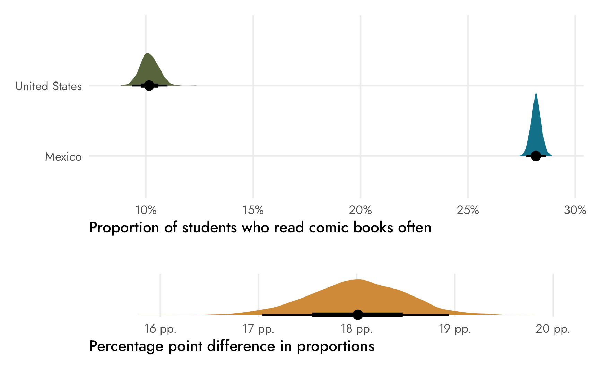
Code
draws_logit %>%
group_by(country) %>%
median_qi(.epred_prop)
## # A tibble: 2 × 7
## country .epred_prop .lower .upper .width .point .interval
## <fct> <dbl> <dbl> <dbl> <dbl> <chr> <chr>
## 1 Mexico 0.282 0.277 0.286 0.95 median qi
## 2 United States 0.102 0.0936 0.110 0.95 median qiCool cool, all the results are the same as using raw Stan.
Binomial model with identity link
We didn’t set any priors here, and if we want to be good Bayesians, we should. However, given the logit link, we’d need to specify priors on the log odds scale, and I can’t naturally think in logits. I can think about percentages though, which is why I like the Beta distribution for priors for proportions—it just makes sense.
Also, the raw Stan models spat out percentage-point scale parameters—it’d be neat if {brms} could too.
And it can! We just have to change the link function for the binomial family from "logit" to "identity". This isn’t really documented anywhere (I don’t think?), and it feels weird and wrong, but it works. Note how we take the “logit” out of the second line of the model—we’re no longer using a link function:
\[ \begin{aligned} y_{n \text{ comic books, often}} \sim&\ \operatorname{Binomial}(n_{\text{Total students}}, \pi_{\text{comic books, often}}) \\ \pi_{\text{comic books, often}} =&\ \beta_0 + \beta_1 \text{United States} \\[5pt] \beta_0, \beta_1 =&\ \text{Whatever brms uses as default priors}\\ \end{aligned} \]
Doing this works, but there are some issues. The identity link in a binomial model means that the model parameters won’t be transformed to the logit scale and will instead stay on the proportion scale. We’ll get some errors related to MCMC values because the outcome needs to be constrained between 0 and 1, and the MCMC chains will occasionally wander down into negative numbers and make Stan mad. The model will mostly fit if we specify initial MCMC values at 0.1 or something, but it’ll still complain.
Code
often_comics_model_identity <- brm(
bf(n | trials(total) ~ country),
data = often_comics_only,
family = binomial(link = "identity"),
init = 0.1,
chains = CHAINS, warmup = WARMUP, iter = ITER, seed = BAYES_SEED,
refresh = 0
)
## Start sampling
## Running MCMC with 4 parallel chains...
## Chain 3 Rejecting initial value:
## Chain 3 Error evaluating the log probability at the initial value.
## Chain 3 Exception: binomial_lpmf: Probability parameter[1] is -0.0175658, but must be in the interval [0, 1] (in '/var/folders/17/g3pw3lvj2h30gwm67tbtx98c0000gn/T/RtmpQKMbv4/model-d1884317c1cb.stan', line 36, column 4 to column 44)
## Chain 3 Exception: binomial_lpmf: Probability parameter[1] is -0.0175658, but must be in the interval [0, 1] (in '/var/folders/17/g3pw3lvj2h30gwm67tbtx98c0000gn/T/RtmpQKMbv4/model-d1884317c1cb.stan', line 36, column 4 to column 44)
## Chain 3 Rejecting initial value:
## Chain 3 Error evaluating the log probability at the initial value.
## Chain 3 Exception: binomial_lpmf: Probability parameter[1] is -0.0471304, but must be in the interval [0, 1] (in '/var/folders/17/g3pw3lvj2h30gwm67tbtx98c0000gn/T/RtmpQKMbv4/model-d1884317c1cb.stan', line 36, column 4 to column 44)
## Chain 3 Exception: binomial_lpmf: Probability parameter[1] is -0.0471304, but must be in the interval [0, 1] (in '/var/folders/17/g3pw3lvj2h30gwm67tbtx98c0000gn/T/RtmpQKMbv4/model-d1884317c1cb.stan', line 36, column 4 to column 44)
## Chain 3 Rejecting initial value:
## Chain 3 Error evaluating the log probability at the initial value.
## Chain 3 Exception: binomial_lpmf: Probability parameter[2] is -0.03896, but must be in the interval [0, 1] (in '/var/folders/17/g3pw3lvj2h30gwm67tbtx98c0000gn/T/RtmpQKMbv4/model-d1884317c1cb.stan', line 36, column 4 to column 44)
## Chain 3 Exception: binomial_lpmf: Probability parameter[2] is -0.03896, but must be in the interval [0, 1] (in '/var/folders/17/g3pw3lvj2h30gwm67tbtx98c0000gn/T/RtmpQKMbv4/model-d1884317c1cb.stan', line 36, column 4 to column 44)
## Chain 3 Rejecting initial value:
## Chain 3 Error evaluating the log probability at the initial value.
## Chain 3 Exception: binomial_lpmf: Probability parameter[1] is -0.0529492, but must be in the interval [0, 1] (in '/var/folders/17/g3pw3lvj2h30gwm67tbtx98c0000gn/T/RtmpQKMbv4/model-d1884317c1cb.stan', line 36, column 4 to column 44)
## Chain 3 Exception: binomial_lpmf: Probability parameter[1] is -0.0529492, but must be in the interval [0, 1] (in '/var/folders/17/g3pw3lvj2h30gwm67tbtx98c0000gn/T/RtmpQKMbv4/model-d1884317c1cb.stan', line 36, column 4 to column 44)
## Chain 2 finished in 0.0 seconds.
## Chain 1 finished in 0.1 seconds.
## Chain 3 finished in 0.1 seconds.
## Chain 4 finished in 0.1 seconds.
##
## All 4 chains finished successfully.
## Mean chain execution time: 0.1 seconds.
## Total execution time: 0.3 seconds.Code
often_comics_model_identity
## Family: binomial
## Links: mu = identity
## Formula: n | trials(total) ~ country
## Data: often_comics_only (Number of observations: 2)
## Draws: 4 chains, each with iter = 2000; warmup = 1000; thin = 1;
## total post-warmup draws = 4000
##
## Population-Level Effects:
## Estimate Est.Error l-95% CI u-95% CI Rhat Bulk_ESS Tail_ESS
## Intercept 0.28 0.00 0.28 0.29 1.00 3627 2558
## countryUnitedStates -0.18 0.00 -0.19 -0.17 1.00 1472 1907
##
## Draws were sampled using sample(hmc). For each parameter, Bulk_ESS
## and Tail_ESS are effective sample size measures, and Rhat is the potential
## scale reduction factor on split chains (at convergence, Rhat = 1).One really nice thing about this identity-link model is that the coefficient for countryUnitedStates shows us the percentage-point-scale difference in proportions: −0.18! This is just a regular regression model, so the intercept shows us the average proportion when United States is false (i.e. for Mexico), and the United States coefficient shows the offset from the intercept.
Working with the countryUnitedStates coefficient directly is convenient—there’s no need to divide predicted values by totals or use compare_levels() to find the difference between the United States and Mexico. We have ■our estimand immediately.
Code
draws_diffs_identity <- often_comics_model_identity %>%
gather_draws(b_countryUnitedStates) %>%
# Reverse the value since our theta is Mexico - US, not US - Mexico
mutate(.value = -.value)
draws_diffs_identity %>%
ggplot(aes(x = .value)) +
stat_halfeye(fill = clr_diff) +
# Multiply axis limits by 0.5% so that the right "pp." isn't cut off
scale_x_continuous(labels = label_pp, expand = c(0, 0.005)) +
labs(x = "Percentage point difference in proportions",
y = NULL) +
theme_nice() +
theme(axis.text.y = element_blank(),
panel.grid.major.y = element_blank())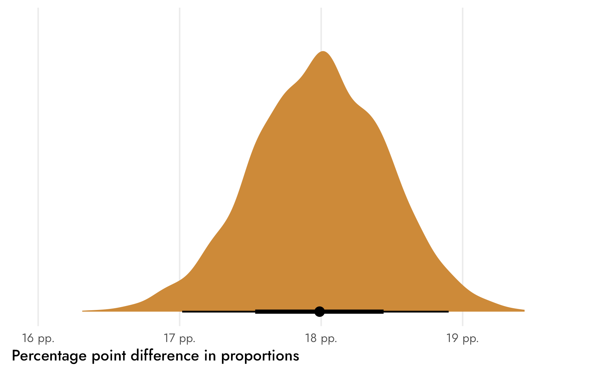
Code
draws_diffs_identity %>%
median_qi(.value)
## # A tibble: 1 × 7
## .variable .value .lower .upper .width .point .interval
## <chr> <dbl> <dbl> <dbl> <dbl> <chr> <chr>
## 1 b_countryUnitedStates 0.180 0.170 0.189 0.95 median qiIntercept-free binomial model with identity link
However, I’m still not entirely happy with it. For one thing, I don’t like all the initial MCMC errors. The model still eventually fit, but I’d prefer it to have a less rocky start. I could probably tinker with more options to get it working, but that’s a hassle.
More importantly, though, is the issue of priors. We still haven’t set any. Also, we’re no longer using a beta-binomial model—this is just regular old logistic regression, which means we’re working with intercepts and slopes. If we use the n | trials(total) ~ country model with an identity link, we’d need to set priors for the intercept and for the difference, which means we need to think about two types of values: (1) the prior average percentage for Mexico and (2) the prior average difference between Mexico and the United States. In the earlier raw Stan model, we set priors for the average percentages for each country and didn’t worry about thinking about the difference. Conceptually, I think this is easier. In my own work, I can think about the prior distributions for specific survey response categories (30% might agree, 50% might disagree, 20% might be neutral), but thinking about differences is less natural and straightforward (there might be a 20 percentage point difference between agree and disagree? that feels weird).
To get percentages for each country and avoid the odd initial value errors and set more natural priors, and ultimately use a beta-binomial model, we can fit an intercept-free model by including a 0 in the right-hand side of the formula. This disables the Mexico reference category and returns estimates for both Mexico and the United States. Now we can finally set a prior too. Here, as I did with the Stan model earlier, I use Beta(2, 6) for both countries, but it could easily be different for each country too. This is one way to force {brms} to essentially use a beta-binomial model, and results in something like this:
\[ \begin{aligned} y_{n \text{ comic books, often}} \sim&\ \operatorname{Binomial}(n_{\text{Total students}}, \pi_{\text{comic books, often}}) \\ \pi_{\text{comic books, often}} =&\ \beta_\text{Mexico} + \beta_\text{United States} \\[10pt] \beta_\text{Mexico}, \beta_\text{United States} =&\ \operatorname{Beta}(2, 6)\\ \end{aligned} \]
Code
often_comics_model <- brm(
bf(n | trials(total) ~ 0 + country),
data = often_comics_only,
family = binomial(link = "identity"),
prior = c(prior(beta(2, 6), class = b, lb = 0, ub = 1)),
chains = CHAINS, warmup = WARMUP, iter = ITER, seed = BAYES_SEED,
refresh = 0
)
## Start sampling
## Running MCMC with 4 parallel chains...
##
## Chain 1 finished in 0.0 seconds.
## Chain 2 finished in 0.0 seconds.
## Chain 3 finished in 0.0 seconds.
## Chain 4 finished in 0.0 seconds.
##
## All 4 chains finished successfully.
## Mean chain execution time: 0.0 seconds.
## Total execution time: 0.1 seconds.Code
often_comics_model
## Family: binomial
## Links: mu = identity
## Formula: n | trials(total) ~ 0 + country
## Data: often_comics_only (Number of observations: 2)
## Draws: 4 chains, each with iter = 2000; warmup = 1000; thin = 1;
## total post-warmup draws = 4000
##
## Population-Level Effects:
## Estimate Est.Error l-95% CI u-95% CI Rhat Bulk_ESS Tail_ESS
## countryMexico 0.28 0.00 0.28 0.29 1.00 3581 2914
## countryUnitedStates 0.10 0.00 0.09 0.11 1.00 2824 2470
##
## Draws were sampled using sample(hmc). For each parameter, Bulk_ESS
## and Tail_ESS are effective sample size measures, and Rhat is the potential
## scale reduction factor on split chains (at convergence, Rhat = 1).The coefficients here represent the average proportions for each country. The ■main estimand we care about is still the difference between the two, so we need to do a little bit of data manipulation to calculate that, just like we did with the first logit version of the model:
Code
p1 <- often_comics_model %>%
epred_draws(newdata = often_comics_only) %>%
mutate(.epred_prop = .epred / total) %>%
ggplot(aes(x = .epred_prop, y = country, fill = country)) +
stat_halfeye() +
scale_x_continuous(labels = label_percent(), expand = c(0, 0.015)) +
scale_fill_manual(values = c(clr_usa, clr_mex)) +
guides(fill = "none") +
labs(x = "Proportion of students who read comic books often",
y = NULL) +
theme_nice()
p2 <- often_comics_model %>%
epred_draws(newdata = often_comics_only) %>%
mutate(.epred_prop = .epred / total) %>%
ungroup() %>%
# compare_levels() subtracts things using alphabetical order, so so we have to
# make the United States the first level
mutate(country = fct_relevel(country, "United States")) %>%
compare_levels(.epred_prop, by = country,
comparison = "pairwise") %>%
ggplot(aes(x = .epred_prop)) +
stat_halfeye(fill = clr_diff) +
# Multiply axis limits by 0.5% so that the right "pp." isn't cut off
scale_x_continuous(labels = label_pp, expand = c(0, 0.005)) +
labs(x = "Percentage point difference in proportions",
y = NULL) +
# Make it so the pointrange doesn't get cropped
coord_cartesian(clip = "off") +
theme_nice() +
theme(axis.text.y = element_blank(),
panel.grid.major.y = element_blank())
(p1 / plot_spacer() / p2) +
plot_layout(heights = c(0.785, 0.03, 0.185))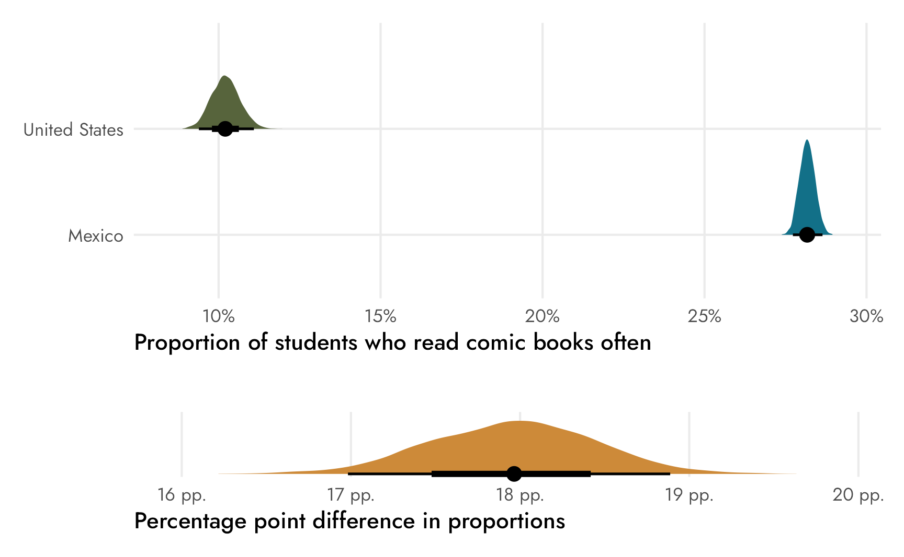
Actual beta-binomial model
Until {brms} 2.17, there wasn’t an official beta-binomial distribution for {brms}, but it was used as the example for creating your own custom family. It is now implemented in {brms} and allows you to define both a mean (\(\mu\)) and precision (\(\phi\)) for a Beta distribution, just like {brms}’s other Beta-related models (like zero-inflated, etc.—see here for a lot more about those). This means that we can model both parts of the distribution simultaneously, which is neat, since it allows us to deal with potential overdispersion in outcomes. Paul Bürkner’s original rationale for not including it was that a regular binomial model with a random effect for the observation id also allows you to account for overdispersion, so there’s not really a need for an official beta-binomial family. But in March 2022 the beta_binomial family was added as an official distributional family, which is neat.
We can use it here instead of family = binomial(link = "identity") with a few adjustments. The family uses a different mean/precision parameterization of the Beta distribution instead of the two shapes \(\alpha\) and \(\beta\), but we can switch between them with some algebra (see this for more details):
\[ \begin{equation} \begin{aligned}[t] \text{Shape 1:} && \alpha &= \mu \phi \\ \text{Shape 2:} && \beta &= (1 - \mu) \phi \end{aligned} \qquad\qquad\qquad \begin{aligned}[t] \text{Mean:} && \mu &= \frac{\alpha}{\alpha + \beta} \\ \text{Precision:} && \phi &= \alpha + \beta \end{aligned} \end{equation} \]
By default, \(\mu\) is modeled on the log odds scale and \(\phi\) is modeled on the log scale, but I find both of those really hard to think about, so we can use an identity link for both parameters like we did before with binomial() to think about counts and proportions instead. This makes it so the \(\phi\) parameter measures the standard deviation of the count on the count scale, so a prior like Exponential(1 / 1000) would imply that the precision (or variance-ish) of the count could vary by mostly low numbers, but maybe up to ±5000ish, which seems reasonable, especially since the Mexico part of the survey has so many respondents:
Code
ggplot() +
stat_function(fun = ~dexp(., 0.001), geom = "area", fill = "#AC3414") +
scale_x_continuous(labels = label_number(big.mark = ","), limits = c(0, 5000)) +
labs(x = "Possible values for φ", y = NULL, fill = NULL) +
theme_nice() +
theme(axis.text.y = element_blank())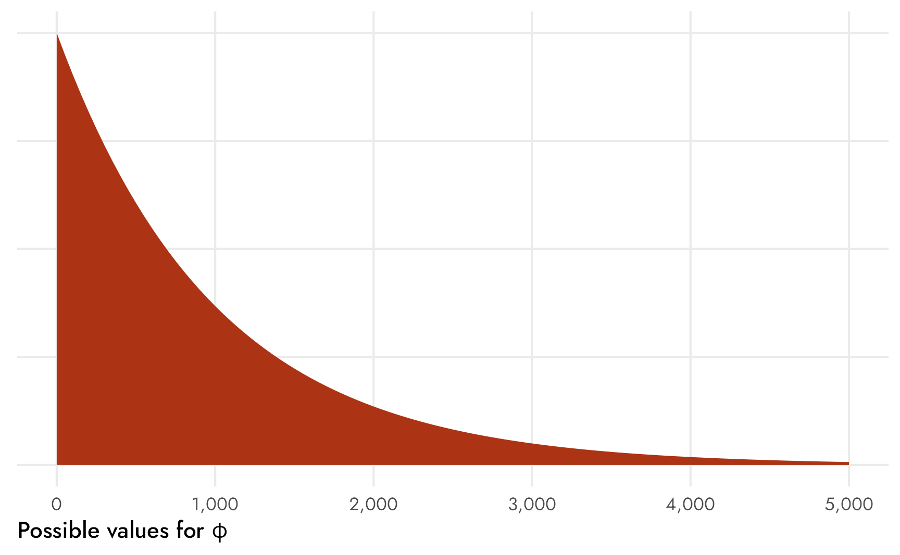
Code
often_comics_model_beta_binomial <- brm(
bf(n | trials(total) ~ 0 + country),
data = often_comics_only,
family = beta_binomial(link = "identity", link_phi = "identity"),
prior = c(prior(beta(2, 6), class = "b", dpar = "mu", lb = 0, ub = 1),
prior(exponential(0.001), class = "phi", lb = 0)),
chains = CHAINS, warmup = WARMUP, iter = ITER, seed = BAYES_SEED,
refresh = 0
)
## Start sampling
## Running MCMC with 4 parallel chains...
##
## Chain 1 finished in 0.0 seconds.
## Chain 2 finished in 0.0 seconds.
## Chain 3 finished in 0.0 seconds.
## Chain 4 finished in 0.0 seconds.
##
## All 4 chains finished successfully.
## Mean chain execution time: 0.0 seconds.
## Total execution time: 0.1 seconds.If we wanted to be super fancy, we could define a completely separate model for the \(\phi\) part of the distribution like this, but we don’t need to here:
often_comics_model_beta_binomial <- brm(
bf(n | trials(total) ~ 0 + country,
phi ~ 0 + country),
data = often_comics_only,
family = beta_binomial(link = "identity", link_phi = "identity"),
prior = c(prior(beta(2, 6), class = "b", dpar = "mu", lb = 0, ub = 1),
prior(exponential(0.001), dpar = "phi", lb = 0)),
chains = CHAINS, warmup = WARMUP, iter = ITER, seed = BAYES_SEED,
refresh = 0
)Check out the results:
Code
often_comics_model_beta_binomial
## Family: beta_binomial
## Links: mu = identity; phi = identity
## Formula: n | trials(total) ~ 0 + country
## Data: often_comics_only (Number of observations: 2)
## Draws: 4 chains, each with iter = 2000; warmup = 1000; thin = 1;
## total post-warmup draws = 4000
##
## Population-Level Effects:
## Estimate Est.Error l-95% CI u-95% CI Rhat Bulk_ESS Tail_ESS
## countryMexico 0.28 0.03 0.22 0.33 1.00 1786 890
## countryUnitedStates 0.11 0.02 0.08 0.16 1.00 1626 1085
##
## Family Specific Parameters:
## Estimate Est.Error l-95% CI u-95% CI Rhat Bulk_ESS Tail_ESS
## phi 1031.27 1022.22 38.29 3841.42 1.01 751 958
##
## Draws were sampled using sample(hmc). For each parameter, Bulk_ESS
## and Tail_ESS are effective sample size measures, and Rhat is the potential
## scale reduction factor on split chains (at convergence, Rhat = 1).Those coefficients are the group proportions, as expected, and we have a \(\phi\) parameter representing the overall variation in counts. The proportions here are a little more uncertain than before, though, which is apparent if we plot the distributions. The distributions have a much wider range now (note that the x-axis now goes all the way up to 60%), and the densities are a lot bumpier and jankier. I don’t know why though! This is weird! I’m probably doing something wrong!
Code
often_comics_model_beta_binomial %>%
epred_draws(newdata = often_comics_only) %>%
mutate(.epred_prop = .epred / total) %>%
ggplot(aes(x = .epred_prop, y = country, fill = country)) +
stat_halfeye() +
scale_x_continuous(labels = label_percent(), expand = c(0, 0.015)) +
scale_fill_manual(values = c(clr_usa, clr_mex)) +
guides(fill = "none") +
labs(x = "Proportion of students who read comic books often",
y = NULL) +
theme_nice()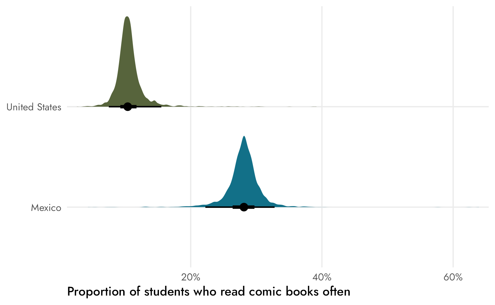
Final answer to the question
Phew, that was a lot of slow pedagogical exposure. What’s our ■official estimand? What’s our final answer to the question “Do respondents in Mexico read comic books more often than respondents in the United States?”?
Yes. They most definitely do.
In an official sort of report or article, I’d write something like this:
Students in Mexico are far more likely to read comic books often than students in the United States. On average, 28.2% (between 27.7% and 28.6%) of PISA respondents in Mexico read comic books often, compared to 10.2% (between 9.4% and 11.1%) in the United States. There is a 95% posterior probability that the difference between these proportions is between 17.0 and 18.9 percentage points, with a median of 18.0 percentage points. This difference is substantial, and there’s a 100% chance that the difference is not zero.
Question 2: Frequency of newspaper readership in the US
Now that we’ve got the gist of proportion tests with {brms}, we’ll go a lot faster for this second question. We’ll forgo all frequentist stuff and the raw Stan stuff and just skip straight to the intercept-free binomial model with an identity link.
Estimand
For this question, we want to know the differences in the the proportions of American newspaper-reading frequencies, or whether the differences between (1) ■rarely and ■sometimes, (2) ■sometimes and ■often, and (3) ■rarely and ■often are greater than zero:
Code
fancy_table %>%
tab_style(
style = list(
cell_fill(color = colorspace::lighten("#E51B24", 0.8)),
cell_text(color = "#E51B24", weight = "bold")
),
locations = list(
cells_body(columns = 3, rows = 4)
)
) %>%
tab_style(
style = list(
cell_fill(color = colorspace::lighten("#FFDE00", 0.8)),
cell_text(color = colorspace::darken("#FFDE00", 0.1), weight = "bold")
),
locations = list(
cells_body(columns = 4, rows = 4)
)
) %>%
tab_style(
style = list(
cell_fill(color = colorspace::lighten("#009DDC", 0.8)),
cell_text(color = "#009DDC", weight = "bold")
),
locations = list(
cells_body(columns = 5, rows = 4)
)
)| Rarely | Sometimes | Often | |
|---|---|---|---|
| Mexico | |||
Comic books |
26.29% |
45.53% |
28.17% |
Newspapers |
18.02% |
32.73% |
49.25% |
| United States | |||
Comic books |
62.95% |
26.86% |
10.19% |
Newspapers |
25.27% |
37.22% |
37.51% |
We’ll again call this estimand \(\theta\), but have three different versions of it:
\[
\begin{aligned}
\theta_1 &= \pi_\text{US, newspapers, often} - \pi_\text{US, newspapers, sometimes} \\
\theta_2 &= \pi_\text{US, newspapers, sometimes} - \pi_\text{US, newspapers, rarely} \\
\theta_3 &= \pi_\text{US, newspapers, often} - \pi_\text{US, newspapers, rarely}
\end{aligned}
\] We just spent a bunch of time talking about comic books, and now we’re looking at data about newspapers and America. Who represents all three of these things simultaneously? Clark Kent / Superman, obviously, the Daily Planet journalist and superpowered alien dedicated to truth, justice, and the American way a better tomorrow. I found this palette at Adobe Color.
Code
# US newspaper question colors
clr_often <- "#009DDC"
clr_sometimes <- "#FFDE00"
clr_rarely <- "#E51B24"Bayesianly with {brms}
Let’s first extract the aggregated data we’ll work with—newspaper frequency in the United States only:
Code
newspapers_only <- reading_counts %>%
filter(book_type == "Newspapers", country == "United States")
newspapers_only
## # A tibble: 3 × 6
## country book_type frequency n total prop
## <fct> <chr> <fct> <int> <int> <dbl>
## 1 United States Newspapers Rarely 1307 5172 0.253
## 2 United States Newspapers Sometimes 1925 5172 0.372
## 3 United States Newspapers Often 1940 5172 0.375We’ll define this formal beta-binomial model for each of the group proportions and we’ll use a Beta(2, 6) prior again (so 25% ± a bunch):
\[ \begin{aligned} &\ \textbf{Estimands} \\ \theta_1 =&\ \pi_{\text{newspapers, often}_\text{US}} - \pi_{\text{newspapers, sometimes}_\text{US}} \\ \theta_2 =&\ \pi_{\text{newspapers, sometimes}_\text{US}} - \pi_{\text{newspapers, rarely}_\text{US}} \\ \theta_3 =&\ \pi_{\text{newspapers, often}_\text{US}} - \pi_{\text{newspapers, rarely}_\text{US}} \\[10pt] &\ \textbf{Beta-binomial model} \\ y_{n \text{ newspapers, [frequency]}_\text{US}} \sim&\ \operatorname{Binomial}(n_{\text{Total students}_\text{US}}, \pi_{\text{newspapers, [frequency]}_\text{US}}) \\ \pi_{\text{newspapers, [frequency]}_\text{US}} \sim&\ \operatorname{Beta}(\alpha, \beta) \\[10pt] &\ \textbf{Priors} \\ \alpha =&\ 2 \\ \beta =&\ 6 \end{aligned} \]
We can estimate this model with {brms} using an intercept-free binomial model with an identity link:
Code
freq_newspapers_model <- brm(
bf(n | trials(total) ~ 0 + frequency),
data = newspapers_only,
family = binomial(link = "identity"),
prior = c(prior(beta(2, 6), class = b, lb = 0, ub = 1)),
chains = CHAINS, warmup = WARMUP, iter = ITER, seed = BAYES_SEED,
refresh = 0
)
## Start sampling
## Running MCMC with 4 parallel chains...
##
## Chain 1 finished in 0.0 seconds.
## Chain 2 finished in 0.0 seconds.
## Chain 3 finished in 0.0 seconds.
## Chain 4 finished in 0.0 seconds.
##
## All 4 chains finished successfully.
## Mean chain execution time: 0.0 seconds.
## Total execution time: 0.1 seconds.Code
freq_newspapers_model
## Family: binomial
## Links: mu = identity
## Formula: n | trials(total) ~ 0 + frequency
## Data: newspapers_only (Number of observations: 3)
## Draws: 4 chains, each with iter = 2000; warmup = 1000; thin = 1;
## total post-warmup draws = 4000
##
## Population-Level Effects:
## Estimate Est.Error l-95% CI u-95% CI Rhat Bulk_ESS Tail_ESS
## frequencyRarely 0.25 0.01 0.24 0.26 1.00 4536 2758
## frequencySometimes 0.37 0.01 0.36 0.38 1.00 4084 2933
## frequencyOften 0.37 0.01 0.36 0.39 1.00 4318 3217
##
## Draws were sampled using sample(hmc). For each parameter, Bulk_ESS
## and Tail_ESS are effective sample size measures, and Rhat is the potential
## scale reduction factor on split chains (at convergence, Rhat = 1).It works! These group proportions are the same as what we found in the contingency table:
Code
plot_props_newspaper <- freq_newspapers_model %>%
epred_draws(newdata = newspapers_only) %>%
mutate(.epred_prop = .epred / total) %>%
ggplot(aes(x = .epred_prop, y = frequency, fill = frequency)) +
stat_halfeye() +
scale_x_continuous(labels = label_percent()) +
scale_fill_manual(values = c(clr_rarely, clr_sometimes, clr_often)) +
labs(x = "Proportion of frequencies of newspaper reading", y = NULL) +
guides(fill = "none") +
theme_nice()
plot_props_newspaper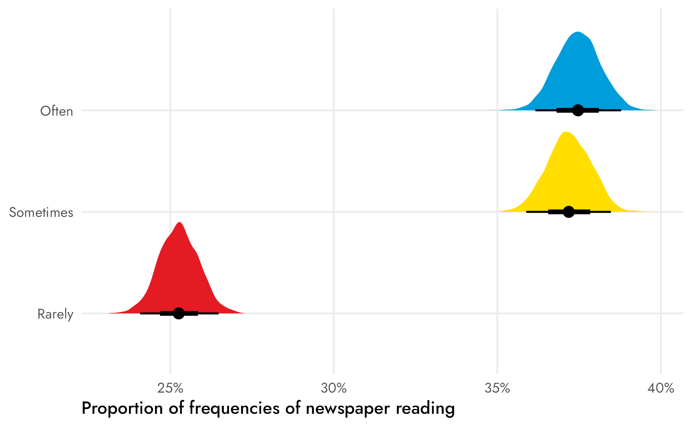
We’re interested in our three \(\theta\)s, or the posterior differences between each of these proportions. We can again use compare_levels() to find these all at once. If we specify comparison = "pairwise", {tidybayes} will calculate the differences between each pair of proportions.
Code
freq_newspapers_diffs <- freq_newspapers_model %>%
epred_draws(newdata = newspapers_only) %>%
mutate(.epred_prop = .epred / total) %>%
ungroup() %>%
compare_levels(.epred_prop, by = frequency) %>%
# Put these in the right order
mutate(frequency = factor(frequency, levels = c("Often - Sometimes",
"Sometimes - Rarely",
"Often - Rarely")))
freq_newspapers_diffs %>%
ggplot(aes(x = .epred_prop, y = fct_rev(frequency), fill = frequency)) +
stat_halfeye(fill = clr_diff) +
geom_vline(xintercept = 0, color = "#F012BE") +
# Multiply axis limits by 0.5% so that the right "pp." isn't cut off
scale_x_continuous(labels = label_pp, expand = c(0, 0.005)) +
labs(x = "Percentage point difference in proportions",
y = NULL) +
guides(fill = "none") +
theme_nice()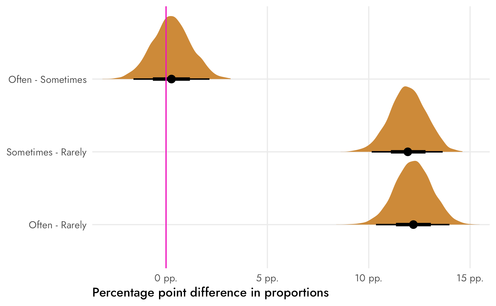
We can also calculate the official median differences and the probabilities that the posteriors are greater than 0:
Code
freq_newspapers_diffs %>%
summarize(median = median_qi(.epred_prop, .width = 0.95),
p_gt_0 = sum(.epred_prop > 0) / n()) %>%
unnest(median)
## # A tibble: 3 × 8
## frequency y ymin ymax .width .point .interval p_gt_0
## <fct> <dbl> <dbl> <dbl> <dbl> <chr> <chr> <dbl>
## 1 Often - Sometimes 0.00268 -0.0161 0.0214 0.95 median qi 0.615
## 2 Sometimes - Rarely 0.119 0.101 0.136 0.95 median qi 1
## 3 Often - Rarely 0.122 0.104 0.140 0.95 median qi 1There’s only a 60ish% chance that the difference between ■often and ■sometimes is bigger than zero, so there’s probably not an actual difference between those two categories, but there’s a 100% chance that the differences between ■sometimes and ■rarely and ■often and ■rarely are bigger than zero.
Better fill colors
Before writing up the final official answer, we need to tweak the plot of differences. With the comic book question, we used some overly-simplified-and-wrong color theory and created a ■yellow color for the difference (since ■blue − ■green = ■yellow). We could maybe do that here too, but we’ve actually used all primary colors in our Superman palette. I don’t know what ■blue − ■yellow or ■yellow − ■red would be, and even if I calculated it somehow, it wouldn’t be as cutely intuitive as blue minus green.
So instead, we’ll do some fancy fill work with the neat {ggpattern} package, which lets us fill ggplot geoms with multiply-colored patterns. We’ll fill each distribution of \(\theta\)s with the combination of the two colors: we’ll fill the difference between ■often and ■sometimes with stripes of those two colors, and so on.
We can’t use geom/stat_halfeye() because {tidybayes} does fancier geom work when plotting its density slabs, but we can use geom_density_pattern() to create normal density plots:
Code
freq_newspapers_diffs %>%
ggplot(aes(x = .epred_prop, fill = frequency, pattern_fill = frequency)) +
geom_density_pattern(
pattern = "stripe", # Stripes
pattern_density = 0.5, # Take up 50% of the pattern (i.e. stripes equally sized)
pattern_spacing = 0.2, # Thicker stripes
pattern_size = 0, # No border on the stripes
trim = TRUE, # Trim the ends of the distributions
linewidth = 0 # No border on the distributions
) +
geom_vline(xintercept = 0, color = "#F012BE") +
# Multiply axis limits by 0.5% so that the right "pp." isn't cut off
scale_x_continuous(labels = label_pp, expand = c(0, 0.005)) +
# Set colors for fills and pattern fills
scale_fill_manual(values = c(clr_often, clr_sometimes, clr_often)) +
scale_pattern_fill_manual(values = c(clr_sometimes, clr_rarely, clr_rarely)) +
guides(fill = "none", pattern_fill = "none") + # Turn off legends
labs(x = "Percentage point difference in proportions",
y = NULL) +
facet_wrap(vars(frequency), ncol = 1) +
theme_nice() +
theme(axis.text.y = element_blank(),
panel.grid.major.y = element_blank())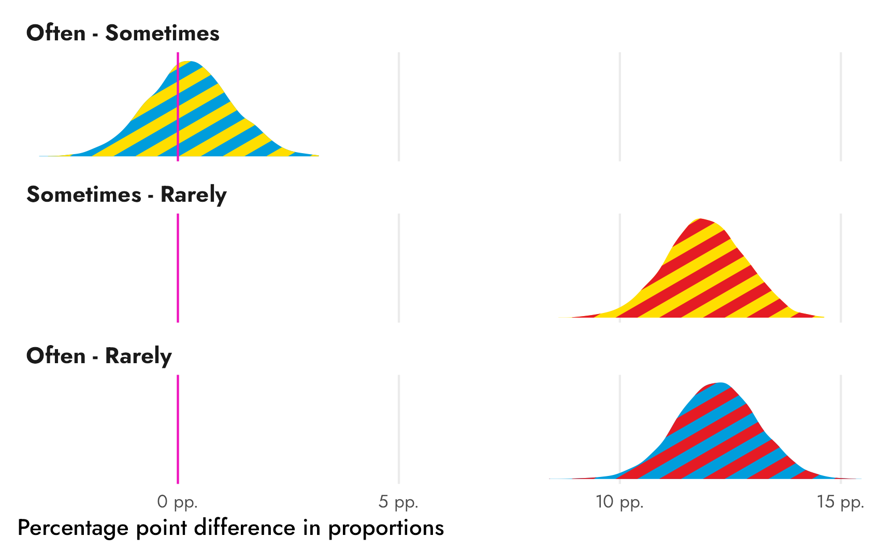
Ahhh that’s so cool!
The only thing that’s missing is the pointrange that we get from stat_halfeye() that shows the median and the 50%, 80%, and 95% credible intervals. We can calculate those ourselves and add them with geom_pointinterval():
Code
# Find medians and credible intervals
freq_newspapers_intervals <- freq_newspapers_diffs %>%
group_by(frequency) %>%
median_qi(.epred_prop, .width = c(0.5, 0.8, 0.95))
plot_diffs_nice <- freq_newspapers_diffs %>%
ggplot(aes(x = .epred_prop, fill = frequency, pattern_fill = frequency)) +
geom_density_pattern(
pattern = "stripe", # Stripes
pattern_density = 0.5, # Take up 50% of the pattern (i.e. stripes equally sized)
pattern_spacing = 0.2, # Thicker stripes
pattern_size = 0, # No border on the stripes
trim = TRUE, # Trim the ends of the distributions
linewidth = 0 # No border on the distributions
) +
# Add 50%, 80%, and 95% intervals + median
geom_pointinterval(data = freq_newspapers_intervals,
aes(x = .epred_prop, xmin = .lower, xmax = .upper)) +
geom_vline(xintercept = 0, color = "#F012BE") +
# Multiply axis limits by 0.5% so that the right "pp." isn't cut off
scale_x_continuous(labels = label_pp, expand = c(0, 0.005)) +
# Set colors for fills and pattern fills
scale_fill_manual(values = c(clr_often, clr_sometimes, clr_often)) +
scale_pattern_fill_manual(values = c(clr_sometimes, clr_rarely, clr_rarely)) +
guides(fill = "none", pattern_fill = "none") + # Turn off legends
labs(x = "Percentage point difference in proportions",
y = NULL) +
facet_wrap(vars(frequency), ncol = 1) +
# Make it so the pointrange doesn't get cropped
coord_cartesian(clip = "off") +
theme_nice() +
theme(axis.text.y = element_blank(),
panel.grid.major.y = element_blank())
plot_diffs_nice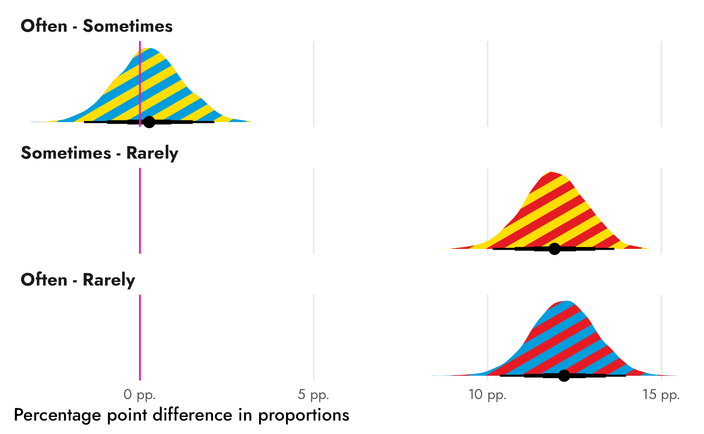
Perfect!
Final answer to the question
So, given these results, what’s the answer to the question “Do students in the United States vary in their frequency of reading newspapers?”? What are our three \(\theta\)s? The frequencies vary, but only between ■rarely and the other two categories. There’s no difference between ■sometimes and ■often
Code
(
(plot_props_newspaper + labs(x = "Proportions") +
facet_wrap(vars("Response proportions"))) |
plot_spacer() |
(plot_diffs_nice + labs(x = "Percentage point differences"))
) +
plot_layout(widths = c(0.475, 0.05, 0.475))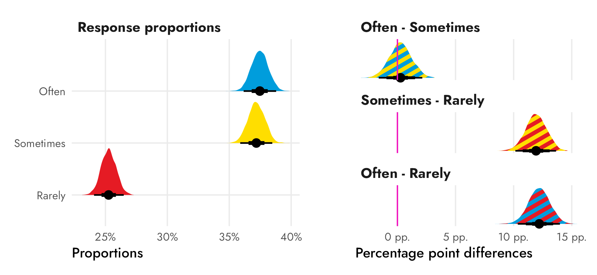
Here’s how I’d write about the results:
Students in the United States tend to read the newspaper at least sometimes, and are least likely to read it rarely. On average, 25.3% of American PISA respondents report reading the newspaper rarely (with a 95% credible interval of between 24.1% and 26.5%), compared to 37.2% reading sometimes (35.9%–38.5%) and 37.5% reading sometimes (36.2%–38.8%).
There is no substantial difference in proportions between those reporting reading newspapers often and sometimes. The posterior median difference is between −1.6 and 2.1 percentage points, with a median of 0.3 percentage points, and there’s only a 61.5% probability that this difference is greater than 0, which implies that the two categories are indistinguishable from each other.
There is a clear substantial difference between the proportion reading newspapers rarely and the other two responses, though. The posterior median difference between sometimes and rarely is between 10.1 and 13.6 percentage points (median = 11.9), while the difference between often and rarely is between 10.4 and 14.0 percentage points (median = 12.2). The probability that each of these differences is greater than 0 is 100%.
Et voila! Principled, easily interpretable, non-golem-based tests of differences in proportions using Bayesian statistics!
Citation
@online{heiss2023,
author = {Heiss, Andrew},
title = {A Guide to {Bayesian} Proportion Tests with {R} and \{Brms\}},
date = {2023-05-15},
url = {https://knuutila.net/blog/2023/05/15/fancy-bayes-diffs-props},
doi = {10.59350/kw2gj-kw740},
langid = {en}
}